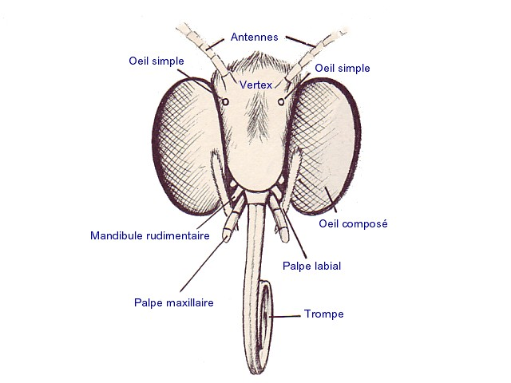
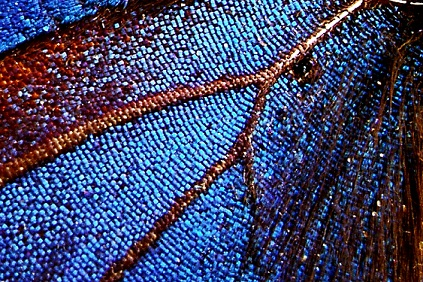

Les antennes
Les antennes des papillons ont le même rôle que le nez chez l'homme, à la différence près qu'elles sont incomparablement plus sensibles aux odeurs.
Le fais que les deux organes olfactifs soient séparés leur permet de localiser des soures d'odeurs, de la même façon que nous pouvons localiser des sources sonores par stéréophonie. Il existe plusieurs types d'antennes: les antennes des rhopalocères sont en forme de massue, tandis que celles des hétérocères sont de formes variées. Le plus souvent ramifiées, ce qui augmente la surface sensible et permet une plus grande efficacité.
Cela s'explique par le fait que, de nuit, les insectes ne peuvent compter sur leur vue pour se repérer. Ils utilisent donc des odeurs pour trouver les fleurs et les partenaires.
Les papillons peuvent sentir des phéromones à plusieurs kilomètres.
La longueur des antennes est variable et peut atteindre, chez certaines espèces, jusqu'à trois fois la longueur du corps.
La tête
Les yeux
Les papillons ont des yeux à facettes. Ils sont composés de milliers de petits yeux appelés ommatidies, d'où le nom de yeux composés.
Chaque ommatidie a son nerf optique et son cristallin.
La disposition des ommatidies sur l'oeil à facette, qui est bombé, est telle que chacune regarde dans une direction légèrement différente. Ce qui permet à l'insecte de percevoir le moindre mouvement autour de lui. En cas de mouvement près du papillon, seules quelques ommatidies seront stimulées.
Malgré les milliers d'ommatidies qui leur permettent d'avoir une vision très complète, ils ne peuvent détecter des mouvements lents et ont une vue très peu précise.
La trompe
La trompe, qui est la langue des papillons, est un tube creux composé de deux gouttières situées autour d'un tube central.
Lorsqu'elle ne sert pas, l'insecte l'enroule dans une structure protectrice située sous sa tête.
Les mâles ne servent de leur trompe pour absorber les sels minéraux qui leur sont indispensable pour produire les phéromones nécessaires aux parades nuptiales et aux accouplements.
La trompe permet bien sur aussi, à mâles et femelles, d'aspirer le nectar des fleurs qui contient : fructoses, glucoses, protéines, vitamines et autres substances énergétiques indispensables pour voler.
La taille de la trompe des papillons est très variable; elle dépend des fleurs dans lesquelles le papillon puise sa nourriture, et peut atteindre une longueur considérable. Ainsi, certaines espèces de sphinx ont une trompe qui mesure plus de 30cm.
Le thorax
Le thorax est constitué de trois segments chitineux rigides, chaque segment portant une paire de pattes.
Les ailes antérieures sont fixées sur l'anneau central, tandis que les ailes postérieures sont fixées sur l'anneau arrière.
Le thorax est le support de tous ces membres cela explique pourquoi le thorax est la partie du corps la plus musclée.
L'abdomen
Dernière des trois parties qui constituent le corps de l'insecte. Il sert principalement à la reproduction, mais contient aussi l'intestin et le coeur, qui est fait d'une pompe musculaire et qui permet la circulation de l'hémolymphe dans tout le corps.
Chez la plupart des femelles, l'abdomen est muni d'un ovipositeur qui sert à la ponte des oeufs.
L'abdomen des femelles est généralement plus gros que celui des mâles, du fait qu'il contient les oeufs, qui sont plus souvent nombreux.
Certaines espèces ont l'appareil auditif situé sur l'abdomen.
Les femelles de certaines espèces nocturnes sont munies de glandes olfactives très puissantes situées à l'arrière de l'abdomen, dont les sécrétions ont pour rôles d'attirer les mâles.
Les ailes
La forme
Lorsque le papillon sort de la chrysalide, ses ailes sont molles et plus petites que son corps.
L'adulte a alors, entre une demi-heure et une heure pour les faire sétirer et leur faire prendre leur forme définitive, avant qu'elle durcissent. Pour cela, il absorbe de l'air pour gonfler ses ailes, qui s'étendent en faite grâce à l'augmentation de la pression sanguine, qui peut être multipliée par quinze.
Le type de vol dépend de la forme des ailes. Ainsi des papillons comme le Flambé ou le Machaon qui ont une surface d'aile ont la possibilité de faire de longs vols planés et peuvent parcourir de grande distances sans battre des ailes. D'autres espèces ont des ailes qui battent plus rapidement.
Les Moro-sphinx par exemple peuvent faire jusqu'à 80 battements d'ailes par seconde. Ce qui permet de faire des pointes de vitesse, du sur place ou encore d'aller en marche arrière, selon la position dans laquelle ils mettent leurs ailes.
Les écailles
Les ailes des Lépidoptères ont la particularité d'être couvertes d'écailles, qui sont des poils aplatis et élargis. Ces écailles sont fixées sur la membrane alaire et sont disposées en rangées qui se chevauchent, comme les tuiles d'un toit.
Lorsqu'elles se détachent, elles ne sont pas remplacées.
Ainsi l'adulte, dit "insecte parfait", n'est véritablement parfait que lorsqu'il sort de la chrysalide, moment à partir duquel il commence à perdre ses écailles.
Les motifs colorés des ailes dépendent de la disposition et de la couleur des écailles.
L'autre rôle des écailles est la sécrétion de parfum qui attirent les individus de sexe opposés.
La taille et le nombre des écailles est variable.
De nombreuses espèces en possèdent plus d'un million, cela explique l'extrême complexité et la grande précision des dessins des ailes, qui font des papillons de si beaux insectes.

Le couleur
Les papillons utilisent plusieurs techniques pour que leur ailes aient de belles couleurs.
Ils peuvent utiliser les pigments colorés contenus dans les feuilles des plantes que consomment les chenilles.
Ces pigments sont conservés après digestion et sont transmis à la chrysalide puis au papillon. Par mélange des pigments, ils peuvent obtenir des multiples couleurs.
D'autres espèces obtiennent leurs couleurs par phénomène optique: leurs écailles sont striées de minuscules plis qui renvoient à l'oeil une seule longueur d'onde, donc une seule couleur, par diffraction de la lumière du soleil.
Ce phénomène est très visible chez le Grand Mars Changeant, qui change de couleur selon l'angle de vue.
Fonctionnalité
Les ailes des papillons ont un autre rôle, qui est de capter l'énergie du soleil. Leur surface est assez importante et ils s'en servent comme de véritables panneaux solaires, qui leur permettent d'absorber les paquets d'énergie lumineuse.
Cette énergie leur est indispensable car ce sont des animaux à sang froid et il leur fait donc faire monter la température de leur sang et de leurs muscles, avant de pouvoir voler.
Il n'est donc pas rare de les voir au petit matin, les ailes écartées en train de prendre un bain de soleil, profitant des premiers rayons de la journée.
Tout en vidéo : C'est pas Sorcier
haut de page